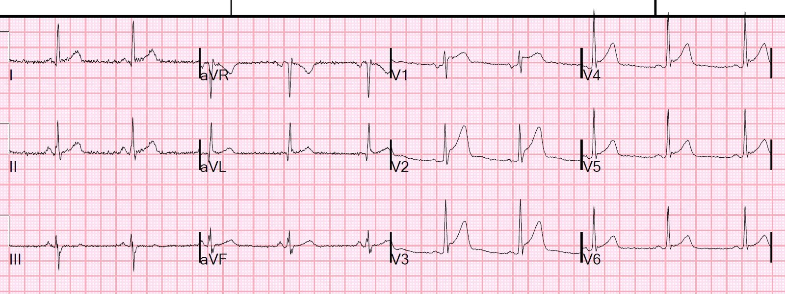
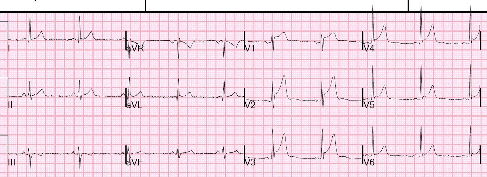
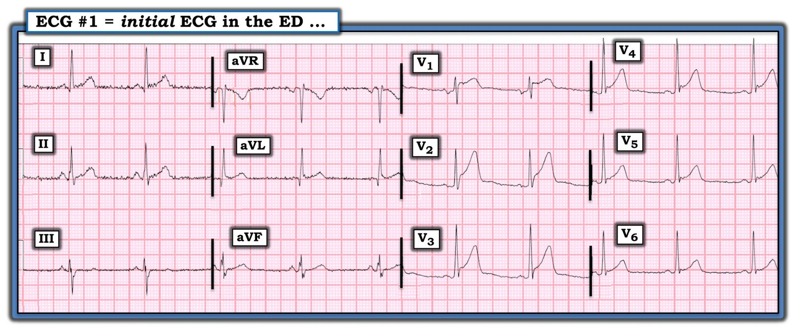
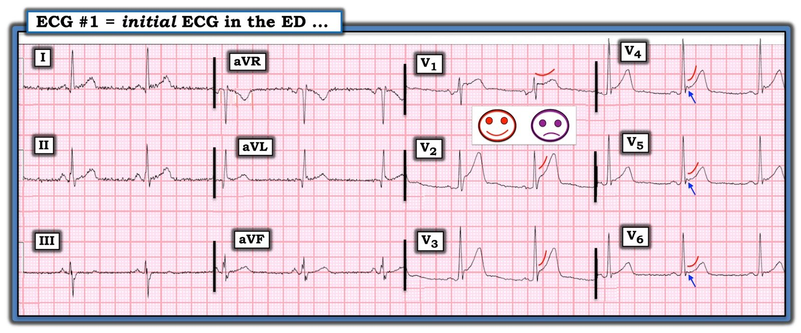

26/05/2020 — Một nam giới trung niên đau ngực
Bản dịch tiếng Việt của bài "A middle-aged male with chest pain" – Dr. Smith’s ECG Blog. Giữ nguyên toàn bộ 6 hình ảnh của bản gốc.
Một nam giới 40 mấy tuổi đến khám vì cảm giác đè nặng ngực.
Đây là điện tâm đồ lúc phân loại (triage) của anh ấy:


Bác sĩ ở khu phân loại nghi ngờ đây là dương tính giả do ST chênh lên biến thể bình thường lành tính (thường được gọi là “tái cực sớm (Early Repolarization)”, dù nhiều người đang cố từ bỏ cách gọi này đối với hình thái này)
Khi nhìn thấy điện tâm đồ, tôi lập tức nghĩ rằng đây không phải STEMI.
Tôi đã áp dụng công thức tái cực sớm/tắc LAD.
Xem bài này để biết phần giải thích và tài liệu tham khảo:
12 Example Cases of Use of 3- and 4-variable formulas to differentiate normal STE from subtle LAD occlusion (12 ca minh họa việc dùng công thức 3 biến và 4 biến để phân biệt ST chênh lên bình thường với tắc LAD kín đáo)
Hãy nhớ rằng công thức chỉ được áp dụng khi KHÔNG có dấu hiệu nào sau đây:
1. Có đoạn ST thẳng hoặc lồi dù chỉ ở MỘT trong các chuyển đạo V2-V6
2. ST chênh lên (STE) ít nhất 5 mm ở một chuyển đạo trong V2-V4
3. BẤT KỲ ST chênh xuống nào ở BẤT KỲ chuyển đạo nào, dù là soi gương hay không
4. Bất kỳ sóng T đảo ngược nào
5. Bất kỳ sóng Q nào ở V2-V4
6. Bất kỳ biến dạng phần cuối QRS (terminal QRS distortion) nào (không có cả sóng S lẫn sóng J (khía) ở V2 hoặc V3
Nếu có bất kỳ dấu hiệu nào trong số này, đó KHÔNG phải biến thể bình thường, và do đó không nên áp dụng công thức.
ST chênh lên tại thời điểm 60 ms sau điểm J ở chuyển đạo V3 = 4 mm
Biên độ sóng R ở V4 = 20 mm
Biên độ QRS ở V2 = 10 mm
QTc do máy tính đo là 365 ms (đây là đặc điểm có sức nặng nhất của điện tâm đồ này — đó là một QTc rất ngắn đối với nhồi máu cơ tim cấp. Trong loạt ca tắc LAD kín đáo của chúng tôi, QTc trung bình là 420 ms, so với 390 ở ST chênh lên biến thể bình thường)
Giá trị công thức = 16.36 (điểm cắt chính xác nhất là 18.2; giá trị dưới 17.0 có độ nhạy 97% và giá trị trên 19.0 có độ đặc hiệu 97%.
Tôi thường đưa ra lời cảnh báo này:
–Hãy dùng công thức để giúp bạn chẩn đoán tắc LAD khi bạn chưa nghi ngờ điều đó.
–KHÔNG dùng công thức để thuyết phục bạn từ bỏ chẩn đoán tắc LAD.
Chỉ nhìn điện tâm đồ tôi đã tin chắc đây là dương tính giả, nên giá trị công thức càng giúp tôi yên tâm.
Sau đó tôi đi tìm một điện tâm đồ cũ, và đã tìm thấy:


Khai thác bệnh sử cho thấy triệu chứng đã kéo dài liên tục suốt cả ngày, nên troponin ban đầu hẳn sẽ dương tính nếu đây là ST chênh lên dương tính thật.
Troponin đầu tiên trả về dưới ngưỡng phát hiện, troponin thứ 2 cũng vậy.
Chúng tôi cho bệnh nhân xuất viện với chẩn đoán “đau ngực không điển hình.”
___________________________
Ken đã viết bên dưới về tất cả các đặc điểm khiến trường hợp này ít có khả năng là nhồi máu cơ tim cấp.
Tuy nhiên, những gì ông viết là các đặc điểm đặc hiệu cho nhồi máu cơ tim cấp, nhưng không nhạy. Bản thân các đặc điểm này KHÔNG làm cho nhồi máu cơ tim cấp trở nên không có khả năng, chúng chỉ làm cho nó ít có khả năng hơn.
Trong loạt 355 ca tắc LAD liên tiếp của chúng tôi, 143 ca không có đặc điểm nào trong số các đặc điểm mà Ken bàn luận:
Các ca tắc LAD bị loại khỏi nghiên cứu nếu có bất kỳ dấu hiệu nào sau đây:
1. Có đoạn ST thẳng hoặc lồi dù chỉ ở MỘT trong các chuyển đạo V2-V6. (Bắt buộc phải có hình lõm)
2. ST chênh lên (STE) ít nhất 5 mm ở một chuyển đạo trong V2-V4
3. BẤT KỲ ST chênh xuống nào ở BẤT KỲ chuyển đạo nào, dù là soi gương hay không
4. Bất kỳ sóng T đảo ngược nào
5. Bất kỳ sóng Q nào ở V2-V4
6. Bất kỳ biến dạng phần cuối QRS (terminal QRS distortion) nào (không có cả sóng S lẫn sóng J (khía) ở V2 hoặc V3
Vì vậy, khi áp dụng công thức, chỉ được áp dụng cho những điện tâm đồ KHÔNG có dấu hiệu nào ở trên.
Nếu có bất kỳ MỘT dấu hiệu nào ở trên, bạn phải giả định đó là tắc LAD, vì ST chênh lên biến thể bình thường ở V2-V4 KHÔNG có dấu hiệu nào trong số đó.
Cuối cùng, chúng tôi đã xem xét mức độ lõm hướng lên ở V2-V4 và yếu tố này KHÔNG bổ sung BẤT KỲ giá trị nào cho công thức đa biến. Nó có giá trị đơn biến, nhưng hoàn toàn không giúp ích gì nếu bạn đã dùng công thức, vốn tốt hơn nhiều. Nói cách khác, trừ khi có đoạn ST thẳng hoặc lồi, mà khi đó bạn phải giả định là không bình thường, HÌNH DẠNG của đoạn ST không có thêm giá trị nào so với công thức, ngoại trừ ở chỗ nó giúp bạn nhận ra biến thể bình thường dễ dàng hơn.

===================================
BÌNH LUẬN CỦA TÔI, bởi KEN GRAUER, MD (26/5/2020):
===================================
Khi cân nhắc nội dung Bình luận của tôi cho ca này — tôi quyết định tập trung vào HÌNH DẠNG của ST chênh lên. Vì vậy, tôi đã xem lại các ca trước đây mà tôi từng bình luận cho Dr. Smith’s ECG Blog — và bắt gặp Bình luận của tôi trong bài ngày 7 tháng Sáu năm 2019, trong đó những điểm tôi sắp nêu về ca hôm nay hầu như giống hệt những gì tôi đã viết trong ca năm 2019 đó. Rõ ràng, đây là một “Chủ đề điện tâm đồ” cứ lặp đi lặp lại.
- Để rõ ràng — tôi trình bày lại điện tâm đồ ban đầu tại khoa cấp cứu của ca hôm nay (Hình 1).
Dr. Smith đã đưa ra “Đáp án” cho ca hôm nay ở trên — cụ thể là điện tâm đồ trong Hình 1 ít có khả năng chỉ ra hội chứng vành cấp.
- CÂU HỎI: Ngoài giá trị rất thấp (hoàn toàn bình thường) theo công thức của Dr. Smith — NHỮNG dấu hiệu điện tâm đồ nào đã gợi ý cho tôi rằng điện tâm đồ #1 ít có khả năng chỉ ra OMI cấp?


SUY NGHĨ CỦA TÔI về điện tâm đồ #1: Có một lượng nhiễu đáng kể, đặc biệt ở các chuyển đạo chi.
- ĐIỂM THEN CHỐT (PEARL) #1 — Mặc dù lượng nhiễu trong bản ghi này không đủ để cản trở việc đọc chính xác điện tâm đồ này — việc biết cách nhanh chóng xác định chi nào là nguyên nhân gây nhiễu (do run, kết nối điện cực bị lỗi/tiếp xúc da kém, v.v.) là hữu ích, vì điều này có thể giúp khắc phục nhanh hơn, vốn có thể quan trọng khi nhiễu thực sự cản trở việc đọc. Ở điện tâm đồ #1 — nhiễu đường nền rõ nhất ở các chuyển đạo I, II và aVR trong nhóm chuyển đạo chi, trong khi nhiễu đường nền ở các chuyển đạo ngực ít hơn đáng kể. Điều này gợi ý rằng tay phải nhiều khả năng nhất là nguồn gây ra nhiễu này. (LƯU Ý: Để có hướng dẫn nhanh về cách nhận biết chi nào là nguyên nhân gây nhiễu — Vui lòng XEM gạch đầu dòng thứ 1 trong Nhận xét #2 thuộc Bình luận của tôi cho bài viết ngày 27 tháng Chín năm 2019 trên blog của Dr. Smith).
Quay lại Phân tích mô tả của tôi về điện tâm đồ #1:
- Nhịp trong điện tâm đồ #1 là nhịp xoang ~60 lần/phút. Tất cả các khoảng (PR/QRS/QTc) đều bình thường. Trục mặt phẳng trán bình thường, vào khoảng +15 độ. Không có lớn buồng tim.
Về Thay đổi Q-R-S-T:
- Có sóng Q vách hẹp ở các chuyển đạo I và aVL.
- Vùng chuyển tiếp (tức là tăng tiến sóng R) xảy ra sớm — vì sóng R đã cao hơn độ sâu của sóng S ngay từ khoảng giữa chuyển đạo V1 và V2.
- Về thay đổi sóng ST-T — Các chuyển đạo chi trông khá bình thường. Mặc dù khó chắc chắn do nhiễu đường nền — có vẻ có ST chênh lên nhẹ, dạng lõm (concave-up) ở chuyển đạo I và aVL (và có thể cả ở chuyển đạo II) — không kèm ST chênh xuống soi gương nào ở các chuyển đạo dưới. Sóng ST-T ở chuyển đạo III dẹt. Hình ảnh này không có vẻ cấp tính.
- Có ST chênh lên tại điểm J rõ ràng ở từng chuyển đạo ngực. Mức ST chênh lên tối thiểu ở V6 — và tối đa ở các chuyển đạo V1, V2, V3 (tới 2-3 mm). Hình dạng của ST chênh lên nhất quán là dạng lõm (tương tự hình dạng của các đường màu ĐỎ cong nhẹ ở các chuyển đạo này — thấy trong Hình 2).
- Có khía điểm J nổi bật ở các chuyển đạo V4, V5, V6 (mũi tên XANH).


NHẬN ĐỊNH LÂM SÀNG: VÌ SAO tôi cho rằng các dấu hiệu trên trong điện tâm đồ #1 ít có khả năng là cấp tính:
- TUYÊN BỐ MIỄN TRỪ: Không có bộ đặc điểm điện tâm đồ nào hoàn hảo để loại trừ OMI cấp chỉ dựa trên một điện tâm đồ duy nhất. Rõ ràng, thường sẽ cần đánh giá thêm ở bệnh nhân đến khám với triệu chứng mới — đó chính là tình huống của ca hôm nay (tức là người đàn ông 40 mấy tuổi trong ca hôm nay đã đến khám vì “cảm giác đè nặng ngực” mà có vẻ là mới xuất hiện). Do đó — nên đánh giá thêm (tức là khai thác thêm bệnh sử; so sánh với điện tâm đồ nền; các bản ghi liên tiếp; siêu âm tim khẩn; troponin, v.v.) — trước khi có thể yên tâm rằng không có biến cố thiếu máu cục bộ cấp nào đang diễn ra. DÙ VẬY — tôi cho rằng tổng thể các dấu hiệu điện tâm đồ trong ca hôm nay gợi ý rằng việc kích hoạt phòng thông tim cấp cứu sẽ không có chỉ định dựa trên điện tâm đồ ban đầu này!
- LƯU Ý: Lập luận của tôi dưới đây dựa trên các dấu hiệu định tính. Tôi đã không dùng công thức đa biến của Dr. Smith trong quá trình ra quyết định.
ĐIỂM THEN CHỐT (PEARL) #2 — Các dấu hiệu điện tâm đồ làm giảm khả năng có một quá trình cấp tính trong điện tâm đồ #1 bao gồm:
- Không hề có ST chênh xuống soi gương! Mặc dù đúng là một tỷ lệ đáng kể các ca nhồi máu cơ tim thành trước cấp không biểu hiện ST chênh xuống soi gương ở các chuyển đạo dưới (đặc biệt khi tắc LAD đoạn giữa-đoạn xa thay vì đoạn gần) — ST chênh lên thấy trong điện tâm đồ #1 bắt đầu ngay từ chuyển đạo V1! Do đó — thông thường tôi sẽ mong đợi thấy ít nhất một chút ST chênh xuống soi gương ở các chuyển đạo dưới nếu có OMI cấp do tắc LAD đoạn gần.
- Hình dạng của ST chênh lên mà chúng ta thấy ở các chuyển đạo ngực đồng loạt là dạng lõm (tương tự hình dạng của các đường màu ĐỎ cong nhẹ ở các chuyển đạo này). Mặc dù tự thân hình dạng lõm hướng lên (tức là cấu hình “mặt cười”) này không loại trừ khả năng thiếu máu cục bộ cấp — kiểu hình dạng đoạn ST này thường gặp trong các biến thể tái cực. Ngược lại — hình dạng ST thẳng đuỗn và/hoặc ST dạng vòm (tức là cấu hình “mặt mếu”) liên quan với bệnh tim thiếu máu cục bộ cấp phổ biến hơn nhiều.
- Có khía điểm J nổi bật ở các chuyển đạo V4, V5, V6 (mũi tên XANH). Đặc biệt khi thấy ở nhiều chuyển đạo, đi kèm ST chênh lên có vẻ lành tính (tức là dạng lõm) — kiểu khía điểm J này thường gặp trong các biến thể tái cực.
- 2 sóng q ghi nhận trong bản ghi này nhỏ và hẹp — và, chúng xuất hiện ở các chuyển đạo bên I và aVL. Sóng q “vách” bình thường (do vectơ khởi đầu bình thường từ trái sang phải của quá trình khử cực vách) thường có thể thấy ở bất kỳ chuyển đạo bên nào (I, aVL; V4,V5,V6) — vì vậy sự hiện diện của các sóng q thấy trong điện tâm đồ #1 hoàn toàn phù hợp với việc đây là các sóng q “vách” bình thường.
- Khoảng QTc bình thường (nếu không nói là tương đối ngắn). Tôi ước tính QTc ~370 msec — rõ ràng nằm ở phía ngắn của khoảng QTc bình thường. Ngược lại — nhồi máu cơ tim cấp thường đi kèm QTc kéo dài.
- Lực sóng R nổi bật ở các chuyển đạo ngực. OMI thành trước cấp thường biểu hiện giảm biên độ sóng R ở các chuyển đạo trước. Ở đây lại thấy điều ngược lại — vì sóng R trở nên cao và chiếm ưu thế ngay từ chuyển đạo V2.
- Cuối cùng — Thiếu tính khu trú! Tính cả ST chênh lên nhẹ ở các chuyển đạo I, II và aVL — có không dưới 9 trên 12 chuyển đạo trong điện tâm đồ #1 biểu hiện ST chênh lên. Bệnh tim thiếu máu cục bộ cấp có khả năng khu trú cao hơn nhiều — thay vì biểu hiện hình dạng lõm nhất quán của sóng ST-T như chúng ta thấy ở đây ở 9 trong 12 chuyển đạo của bản ghi này.
ĐIỀU CỐT LÕI: Tôi xin nhắc lại “tuyên bố miễn trừ” mà tôi đã viết ở trên:
- TUYÊN BỐ MIỄN TRỪ: Không có bộ đặc điểm điện tâm đồ nào hoàn hảo để loại trừ OMI cấp chỉ dựa trên một điện tâm đồ duy nhất. Có thể cần đánh giá thêm trước khi hoàn toàn yên tâm rằng không có biến cố thiếu máu cục bộ cấp nào đang diễn ra. Ngay cả khi điện tâm đồ không có gì đặc biệt — đôi khi vẫn có chỉ định thông tim để loại trừ một quá trình cấp tính. DÙ VẬY — tôi cho rằng bức tranh tổng thể, dựa trên sự kết hợp các dấu hiệu trong điện tâm đồ #1, ít có khả năng đại diện cho bệnh tim thiếu máu cục bộ cấp.
- Để thực hành thêm việc áp dụng các khái niệm này — Vui lòng XEM bài ngày 7 tháng Sáu năm 2019 trên Dr. Smith’s ECG Blog.
Xin CẢM ƠN Dr. Smith đã trình bày ca bệnh này.